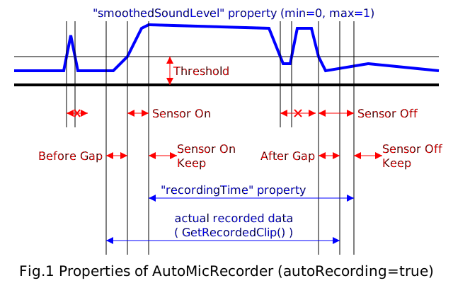
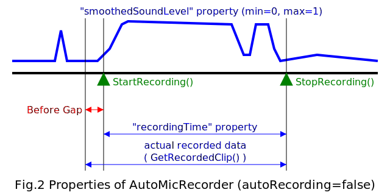

AutoMicRecorder
何のソフトなの？
このプログラムは、Unity（ゲームエンジン）において、マイクからの音声を音量レベルに応じて自動的にAudioClipに切り出すためのアセットです。
サンプルとして、自動的に切り出した音声を復唱し、Google Cloud Speech APIでテキスト化する機能のシーンを用意しました。Google Cloud Speech APIを使うには、以下の作業も必要です。
- Google Developer Consoleを使うためのユーザ登録
- Google Developer Console内でプロジェクトの作成
- Google Cloud Speech APIの有効化
- APIキー（認証情報）の作成
動作条件
- Unity5以上をインストールしたマシン（MacOS X 10.11, Unity2017.1 で動作確認）
- サンプル（Google Cloud Speech APIによる音声認識）を使うためには、Unity5.4以上が必要です。
スクリプトの構成
- AutoMicRecorder/Scripts/
- AutoMicRecorder.cs - AutoMicRecorder本体
- AutoMicRecorderSample/Scripts/
- GoogleJSONRequest.cs - DTOクラス（Google Cloud Speech APIリクエスト）
- GoogleJSONResponse.cs - DTOクラス（Google Cloud Speech APIレスポンス）
- GoogleJSONResponseError.cs - DTOクラス（Google Cloud Speech APIレスポンス）
- GooglePreRecordedSpeechToTextService.cs - AudioClipをGoogle Cloud Speech APIでテキスト化する機能
- HTTP.cs - UniWebのRequestクラスの簡易代替
- PreRecordedSpeechToTextService.cs - AudioClipをテキスト化する機能の抽象クラス
- SpeechToTextResult.cs - DTOクラス（SpeechToTextの結果）
- TestScene.cs - AutoMicRecorderの動作確認のためのコントローラ
- TextAlternative.cs - DTOクラス（SpeechToTextの結果）
使い方
- AutoMicRecorderアセットを、使用したいプロジェクトにインポートする。
- Hierarchyビュー内で右クリック→Audio→Audio Sourceを選び、Audio SourceのGameObjectを追加する。
- 追加したAudio SourceのOutputを、AutoMicRecorderにあるNullAudioMixerのMasterに設定する（Inspectorビュー）
- Audio SourceのGameObjectに、AutoMicRecorder.csを追加する（Inspectorビュー）
InspectorビューのAdd Componentボタンを押した場合は、Scripts→hayatsukikazumi.amr→Auto Mic Recorderを選ぶ。
- Auto Mic Recorderの設定（Inspectorビュー）
- Play On Start
- 起動時にマイクを有効化するか
- Auto Recording
- 音量レベルによる自動録音を行うか
- Threshold
- 音量レベルしきい値（最小0.001〜最大1）
- Auto Calibration
- 音量レベルしきい値を自動的に実行するか
- Sensivity
- 音量レベルしきい値自動調整の感度（-1:鈍感〜0:標準〜1:敏感）
- Mic Device Name
- マイク入力のデバイス名（空白:デフォルトのデバイスを指定）
- Mic Sample Rate
- マイク入力のサンプリング周波数(Hz)
- Max Record Time
- 最大録音時間（秒）
- Before Gap
- 録音開始前の音声データ取得時間（秒）
- Sensor On
- 連続して音量レベルしきい値を超えた時に録音を開始する時間（秒）
- Sensor On Keep
- 自動録音における録音開始後の音量センサー不感時間（秒）
- Sensor Off
- 連続して音量レベルしきい値を割った時に録音を停止する時間（秒）
- Sensor Off Keep
- 自動録音における録音停止後の音量センサー不感時間（秒）
- After Gap
- 録音終了後の音声データ取得時間（秒）
- Max Init Time
- StartMicrophoneメソッドにおける初期化最大待ち時間（秒）


- Recording Started (AutoMicRecorder, bool)
- Recording Stopped (AutoMicRecorder, bool)
- Recording Timeout (AutoMicRecorder, bool)
- CalibrationEnd (AutoMicRecorder, bool)
- MicrophoneStarted (AutoMicRecorder, bool)
- MicrophoneStartFailed (AutoMicRecorder, bool)
- （「AutoMicRecorderの説明」の「イベントハンドラ」「AutoMicRecorderEventの引数」を参照のこと）
サンプルのシーンの設定
- AutoMicRecorderSample/Scenes/testを開く。
- Google Cloud Speech APIでテキスト化する機能を実行する場合
- Google Pre Recorded Speech To Text Serviceの設定（HierarchyビューでGameControllerを選択→Inspectorビュー）
- API Key
- Google Developer Consoleで作成した認証キー
- Language Code
- 言語（例）日本語: ja-JP 英語（アメリカ）: en-US
- Max Alternatives
- 最大の認識結果候補数
- Google Cloud Speech APIでテキスト化する機能を実行しない場合
- Hierarchyビューの「GameController」から、Google Pre Recorded Speech To Text Service コンポーネントを除去、または無効化する。
AutoMicRecorderの説明
イベントハンドラ
- public AutoMicRecorderEvent RecordingStarted
- 録音開始後に発生
- public AutoMicRecorderEvent RecordingStopped
- 録音停止後に発生
- public AutoMicRecorderEvent RecordingTimeout
- 録音時間が最大を超えたために終了した時に発生
- public AutoMicRecorderEvent CalibrationEnd
- 自動しきい値調整の終了時に発生
- public AutoMicRecorderEvent MicrophoneStarted (Ver.2.1〜)
- マイク初期化完了時に発生
- public AutoMicRecorderEvent MicrophoneStartFailed (Ver.2.2〜)
- マイク初期化失敗時、または最大待ち時間超えの時に発生
AutoMicRecorderEventの引数
- AutoMicRecorder source
- 本イベントの発生元のAutoMicRecorder
- bool isAutomatic
- 自動実行と、明示的なメソッド呼び出しの区別（自動実行時にtrue）
プロパティ
- public bool autoRecording
- 音量レベルによる自動録音を行うか
- public float threshold
- 音量レベルしきい値
- public float beforeGap
- 録音開始前の音声データ取得時間（秒）
- public float sensorOn
- 連続して音量レベルしきい値を超えた時に録音を開始する時間（秒）
- public float sensorOnKeep
- 自動録音における録音開始後の音量センサー不感時間（秒）
- public float sensorOff
- 連続して音量レベルしきい値を割った時に録音を停止する時間（秒）
- public float sensorOffKeep
- 自動録音における録音停止後の音量センサー不感時間（秒）
- public float afterGap
- 録音終了後の音声データ取得時間（秒）
- public RecorderStatus status
- AutoMicRecorderの状態（読み取り専用）
- public float recordingTime
- 録音時間（読み取り専用）
- public float soundLevel
- 音量レベル（読み取り専用）
- public bool playOnStart (Ver.2.1〜)
- 起動時にマイクを有効にするか
- public bool autoCalibration (Ver.2.1〜)
- 自動しきい値調整を自動的に実行するか
- public float sensivity (Ver.2.1〜)
- 自動しきい置調整の感度（-1:鈍感〜0:標準〜1:敏感）
- public string micDeviceName (Ver.2.1〜)
- マイクデバイス名（nullまたは空白:デフォルトの音声入力デバイス）
- public float smoothedSoundLevel (Ver.2.1〜)
- アタック音を平均に均した音量レベル（読み取り専用）
- public float maxInitTime (Ver.2.2〜)
- StartMicrophoneメソッドにおける初期化最大待ち時間（秒）
メソッド
- public bool StartRecording()
- 録音を開始する（既に録音中の場合はfalseが返る）
- public bool StopRecording()
- 録音を停止する（既に録音停止中の場合はfalseが返る）
- public AudioClip GetRecordedClip()
- 録音停止後、これまで録音したデータを取得する。
- public void CalibrateThreshold()
- 現在の音量レベルに応じた自動しきい値調整。マイク停止時、録音時はキャンセルされる。
- public void StartMicrophone(int newSampleRate)
- 指定したサンプリング周波数でマイクを初期化する。録音中のデータは破棄される。
- public void StartMicrophone()
- 前回と同じサンプリング周波数でマイクを初期化する。録音中のデータは破棄される。
- public void StopMicrophone()
- マイクを終了する。録音中のデータは破棄される。
RecorderStatusの説明
- public enum RecorderStatus { READY, RECORDING, CALIBRATION, NOT_READY, SENSOR_SURPRESSING}
- AutoMicRecorderの状態
※順位は、状態出力の優先順を示す（例：録音中 かつ 音量センサー抑止中 → RECORDING）
| 順位 |
statusプロパティ |
状態 |
自動録音 |
StartRecording()実行 |
StopRecording()実行 |
| 1 |
NOT_READY |
録音不可能 |
無効 |
false（録音開始しない） |
false（録音していない状態継続） |
| 2 |
RECORDING |
録音中 |
音量レベル監視中 |
false（録音継続） |
true（録音終了） |
| 3 |
CALIBRATION |
CalibrateThresholdメソッドによる自動しきい値調整実行中 |
無効（現在の状態を維持） |
録音中でなければtrue（録音開始） |
録音中ならばtrue（録音終了） |
| 4 |
SENSOR_SURPRESSING |
音量センサー抑止中 |
無効（現在の状態を維持） |
録音中でなければtrue（録音開始） |
録音中ならばtrue（録音終了） |
| 5 |
READY |
録音準備完了 |
音量レベル監視中 |
true（録音開始） |
false（録音していない状態継続） |
著作権・免責事項
このプログラムの著作権は、私（はやつきかづみ）が所有しております。
商用・非商用を問わずこのプログラムをご利用可能です。ただし、このプログラムを使用したことによる不利益・被害・損失等に関して、私（はやつきかづみ）は一切責任を負いません。各自の自己責任でお願いします。
変更履歴
- 2017/10/15 Ver. 1.0.0を公開
- 2017/10/17 本ドキュメントの修正
- 2017/10/30 Ver. 1.0.1を公開
- 録音音声が途切れる不具合の修正
- GooglePreRecordedSpeechToTextServiceにMax Alternativesパラメータを追加
- 2017/11/04 Ver. 1.0.2を公開
- AutoMicRecorderクラスのの一部プロパティをpublic変数に変更
- AutoMicRecorderのSensor On Keep (Sensor On Keep)プロパティの内容を最小録音（停止）時間からセンサー不感時間に変更
- AutoMicRecorder.RecorderStatusにSENSOR_SURPRESSINGステータスを追加
- 2018/05/20 Ver. 2.0.0を公開
- Speech-to-textアセットの公開終了に伴うサンプルの修正（AutoMicRecorderに変更はありません）
- 2018/07/08 Ver. 2.1.0を公開
- AutoMicRecorderに以下の機能を追加
- 自動しきい値調整の自動動作（感度指定あり）
- Microphoneのデバイス名指定
- Start時のマイク起動指定選択
- マイク初期化終了イベント
- メソッド名変更 ResetMicrophone → StartMicrophone
- 以下の各イベントをdelegateからUnityEvent継承クラスに変更
- 録音開始
- 録音終了
- 録音タイムアウト
- 自動しきい値調整終了
- マイク初期化終了
- AutoMicRecorderのプロパティ追加
- playOnStart
- autoCalibration
- sensivity
- micDeviceName
- smoothedSoundLevel
- 自動録音開始・終了の基準となる音量レベルをsmoothedSoundLevelに変更
- 2018/07/14 Ver. 2.2.0を公開
- バグ修正
- AutoMicRecorderに以下の機能を追加
- マイク初期化終了最大時間指定
- マイク初期化終了失敗イベント
- CalibrateThresholdメソッドの修正
しきい値決定アルゴリズムの修正
AutoMicRecorderのプロパティ追加
Copyright(c) はやつきかづみ（早月加積） 2017-2018
http://www.geocities.jp/zzz_s_zoo/
zzzszoo200@gmail.com